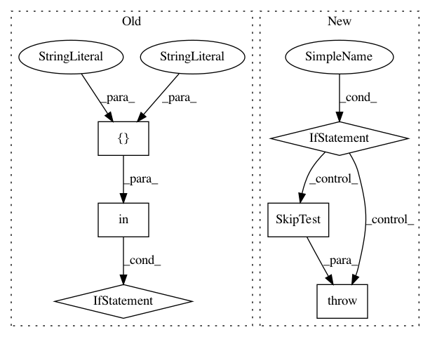

82d1581d79e0057b5455cd9225aa5d5785fc9419,tslearn/tests/sklearn_patches.py,,check_classifiers_train,#Any#Any#Any#,321
Before Change
@ignore_warnings // Warnings are raised by decision function
def check_classifiers_train(name, classifier_orig, readonly_memmap=False):
// Skip shapelet models
if name in ["ShapeletModel", "SerializableShapeletModel"]:
// raise SkipTest("Skipping check_classifiers_classes for shapelets"
// " due to convergence issues...")
X_m, y_m = _create_large_ts_dataset()
classifier_orig = clone(classifier_orig)
classifier_orig.max_iter = 1000
else:
X_m, y_m = _create_small_ts_dataset()
X_m, y_m = shuffle(X_m, y_m, random_state=7)
X_m = TimeSeriesScalerMeanVariance().fit_transform(X_m)
After Change
@ignore_warnings // Warnings are raised by decision function
def check_classifiers_train(name, classifier_orig, readonly_memmap=False):
// Case of shapelet models
if name == "SerializableShapeletModel":
raise SkipTest("Skipping check_classifiers_classes for shapelets"
" due to convergence issues...")
elif name == "ShapeletModel":
classifier_orig = clone(classifier_orig)
classifier_orig.max_iter = 100
X_m, y_m = _create_small_ts_dataset()
X_m, y_m = shuffle(X_m, y_m, random_state=7)
X_m = TimeSeriesScalerMeanVariance().fit_transform(X_m)
In pattern: SUPERPATTERN
Frequency: 3
Non-data size: 6
Instances
Project Name: rtavenar/tslearn
Commit Name: 82d1581d79e0057b5455cd9225aa5d5785fc9419
Time: 2020-05-12
Author: romain.tavenard@univ-rennes2.fr
File Name: tslearn/tests/sklearn_patches.py
Class Name:
Method Name: check_classifiers_train
Project Name: rtavenar/tslearn
Commit Name: 82d1581d79e0057b5455cd9225aa5d5785fc9419
Time: 2020-05-12
Author: romain.tavenard@univ-rennes2.fr
File Name: tslearn/tests/sklearn_patches.py
Class Name:
Method Name: check_classifiers_classes
Project Name: rtavenar/tslearn
Commit Name: 41e9b243d893eca09615bf00f211950e2a69455b
Time: 2019-07-26
Author: givdwiel.vandewiele@ugent.be
File Name: tslearn/tests/sklearn_patches.py
Class Name:
Method Name: check_fit_idempotent